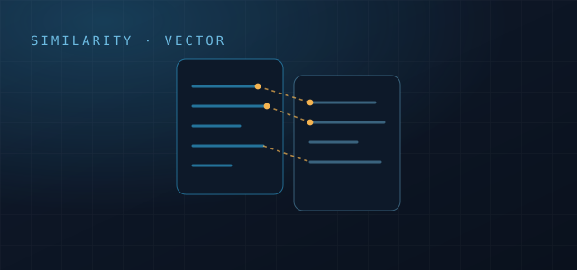
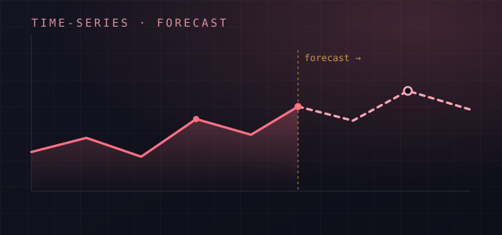
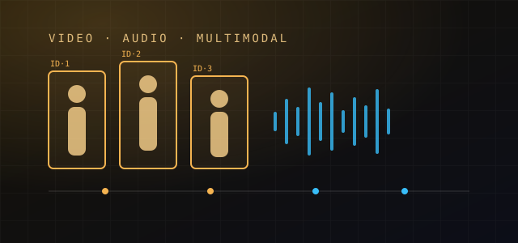
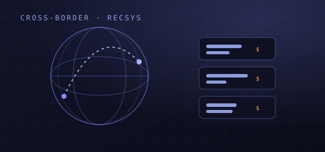
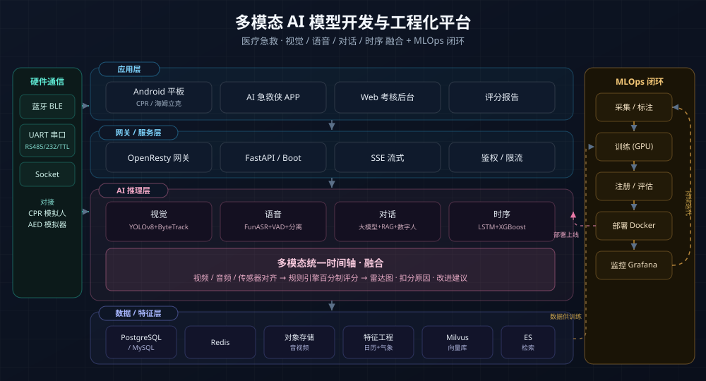

AI 智能论文查重
面向科研 / 高校的论文与图像相似性查重平台
技术总监 · 全栈架构师 · AI/搜索/分布式
技术总监 / 全栈架构师，跨 toC/toB/toG 牵引产品路线、预算、人效与交付节奏。
主导 RAG 智能对话、多模态检索、召回/精排策略，掌握 Prompt、Routing 与向量治理。
在海量文档/图像场景搭建多层索引，覆盖篇内、策略、全库检索与低延迟路由。
精通 Spring Boot/Golang + OpenResty + K8s，高可用多活、链路追踪与容量规划。
OpenResty 削峰、Redis 缓存、RabbitMQ/Kafka 解耦，支撑秒杀级流量与 400G DDoS 防护。
构建 CI/CD、CMDB、Zabbix/Grafana/ES 日志、WAF/堡垒机/SQL 审计，形成可观测闭环。
从 0 组建跨职能团队，负责招聘、绩效、流程规范与工程效能，沉淀培训与应急预案。
技术总监 · 医疗急救 AI + 软硬件一体化
技术总监 · 体育/查重/跨境多产品线
全栈架构师 · 统筹研发/运维/大数据
技术总监 · Golang/Java 多栈交付
技术主管 · 跳跳猪系列
PHP 研发工程师 · 网赚/棋牌/宝石星球
统筹医疗急救 AI 实训产品体系,打通 Android 平板与 CPR 模拟人 / AED 的多协议通信,推动产品从基础训练版迭代至多模态 AI 版,并落地视频评分与时序预测两条 AI 算法线。
统筹 11 人跨职能团队,把 Android 软硬件一体化与多模态 AI(对话/视觉/语音/时序)落到医疗急救实训一线,实现旧业务维护与新产品 0→1 并行。
关键词:多模态 AI · 软硬件一体化 · 医疗急救负责体育 SaaS、科研查重、跨境独立站 3 条主线，从原型共创、预算拆解到工程治理与长期运维，确保多产品协同增长。
统筹体育、查重、跨境三条产品线，亲自牵引预算拆解、招聘与工程治理，让 0-1-100 生命周期快速闭环。
关键词：微服务治理 · 混合云 DevOps · 跨职能团队独立牵头螃蟹账号交易网 1.0 架构升级，兼顾业务重构、安全攻防与多团队协同，支撑交易、IM、搜索全链路扩容。
一人重构螃蟹 1.0 架构，打造跨地域多活体系与异步搜索链路，RT 下降 80%，并通过安全策略抵御 600GB 攻击。
关键词：搜索重构 · 高可用多活 · 攻防实战关联公司 · 与 天钻网络、拓美互娱 同属同一实际控制人旗下不同主体
负责 50W DAU toC 平台与多个电商项目的架构与交付，推进 PHP→Java/Golang 的系统性迁移与自动化运维体系。
带领 30+ 团队完成 PHP 向 Java/Golang 的系统性重构，打造秒杀级网关与全链路自动化，最高承压 400G DDoS。
关键词：多栈协同 · 高并发治理 · 自动化运维关联公司 · 与 淘游科技、拓美互娱 同属同一实际控制人旗下不同主体
带领小型团队完成跳跳猪 PC/H5 0-1 与后续迭代，聚焦混合架构、低成本扩容与高频活动交付。
小团队完成跳跳猪多端首发，混合架构兼顾效率与性能，并以 docker-compose 打造极低成本的扩容方案。
关键词：小团队作战 · 混合架构 · 自动化扩容关联公司 · 与 淘游科技、天钻网络 同属同一实际控制人旗下不同主体
负责棋牌、挖矿、页游等多条业务线的后端开发与维护，从活动玩法到高并发收益计算均独立完成。
沉淀 70W 日活挖矿服务与棋牌活动玩法，利用 Redis + MQ 完成冷热分层与收益实时结算。
关键词：游戏后端 · 高活跃任务队列 · 组件化运营技术总监 · 多模态 AI 视频评分
技术总监 · 时序预测(算法+全栈)
技术总监 · SaaS 赛事交易平台
技术总监 · 论文/图像查重
技术总监 · 跨境电商出海
全栈架构师 · 多活高可用改造
上传三人一组的院前急救考核视频(含音频),自动解析动作与口令并给出百分制评分与改进建议,支持 CPU / GPU 容器化部署。
把 CV(检测/跟踪/姿态)与语音(ASR/VAD/说话人分离)融合到统一时间轴,用规则引擎产出可解释的急救评分报告。
Pitch:多模态融合 · 可解释评分 · GPU 部署面向血站的采供血量时序预测系统(算法 + 全栈),按血站/血型维度预测采供血量,支撑采血计划与库存调度。
三套时序建模并行对比 + 日历气象特征工程 + 滚动回测,把采供血预测做成可运营的采血/库存决策工具,并沉淀专利草案。
Pitch:时序预测 · 特征工程 · 专利沉淀0-1 构建赛事 SaaS，覆盖报名、结算、商家设备、俱乐部等全链路，保障多终端一致体验与高并发交易。
面向赛事组织者的全链路 SaaS，借助微服务 + OpenResty 灰度保障多终端一致体验与稳定交易。
Pitch：赛事交易高并发 · DevOps 监控闭环面向科研/政府场景的多模态查重系统，满足内网合规、海量向量检索与低成本算力策略。
政产学研查重平台，部署 Milvus + CLIP/DINOv2，支撑 500 万图像向量与全球 PDF 检索，满足内网合规。
Pitch：toG 安全交付 · 大规模向量检索负责跨境独立站从原型到出海增长，统一多站点、汇率税费、推荐算法与自动化运维。
跨境独立站的“出海中控”，统一汇率、税费、语言与物流差异，配套 AWS 自动化与千人千面智能推荐。
Pitch：跨境数据同步 · 个性化搜索推荐对账号交易平台进行基础设施再造，覆盖网关、搜索、IM、异步链路与安全策略，支撑业务 8 倍增长。
账号交易基础设施再造，分布式 IM + 搜索链路 + 异步解耦，支撑 8 倍增长并强化密钥与安全治理。
Pitch：OpenResty 网关 · 搜索+MQ 解耦 · 业务倍增点击卡片标题或封面，展开项目详情

面向科研 / 高校的论文与图像相似性查重平台

面向血站的采供血量时序预测(算法 + 全栈)

120 三人协同急救考核视频自动评分

跨境电商独立站，从原型到出海增长
更多内容欢迎访问 GitHub
点击方案查看完整架构图与说明

视觉/语音/对话/时序统一时间轴融合 + 规则引擎评分 + MLOps 工程化闭环

早期 toC 平台分布式演进：服务拆分、缓存层、监控与数据链路

多地域多集群物理部署：IDC + 云混合、网关层与安全域

逻辑服务视角：流量治理、数据同步、可观测与 DevOps
11 年+ 深耕 toC/toB/toG 多赛道，擅长把复杂业务拆解为可观测、可迭代、可规模化的工程体系，覆盖后端、AI/RAG、分布式架构与 DevOps。
Spring Boot 2.x/3.x、OpenResty、DDD/CQRS、API 规范；混合云、双活/多活、容量规划、链路追踪与治理策略。
Milvus、ElasticSearch/OpenSearch、CLIP/DINOv2/ResNet、向量治理；召回-精排-重排策略、PDF/图像解析、低成本算力调度。
SSE 流式对话、语音唤醒 / ASR / TTS、OpenGL 数字人渲染；YOLOv8 + ByteTrack 视频理解、FunASR + VAD + 说话人分离、LSTM/XGBoost 时序预测。
Elasticsearch + Milvus 双引擎、Canal Binlog 增量同步；召回-粗排-精排-重排链路、用户画像与行为特征，千人千面搜索与推荐工程化落地。
Spring Boot、Gin、Hyperf、ThinkPHP、Laravel；gRPC/REST、BFF、服务解耦与网关治理，覆盖 toC/toB/toG 主干业务。
分库分表、读写分离、Binlog CDC、冷热数据治理；Redis 哨兵/Cluster、Canal + ES 增量同步、RabbitMQ/Kafka 异步解耦。
Vue2/3、React、TS、Vite、SSR/SSG、组件库治理、BFF 协同；支撑 toC 大前端与后台/运营可视化需求。
微信/支付宝小程序、UniApp/Flutter 混合开发、H5/APP 同构、端云安全与性能调优，支撑赛事、电商、SaaS 的多端联动。
CI/CD、GitLab Runner、Ansible、Terraform、Prometheus/Zabbix/Grafana/ES 日志、OpenResty 灰度/治理、SLO/SLA 体系。